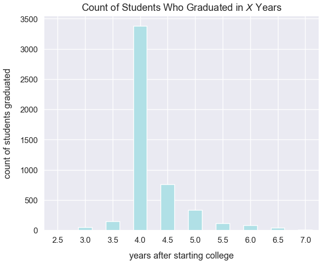
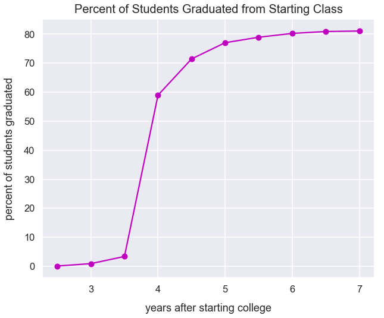

When to Use a Cumulative Frequency Graph
- Dec 29 • 4 min read
- Key Terms: cumulative graph, pandas
Import Modules
import pandas as pd
import matplotlib.pyplot as plt
import seaborn as sns
% matplotlib inline
Set Visualization Styles
sns.set_style("darkgrid")
sns.set_context("talk")
Example: College Graduation Rates
I generate fictional data for the count of students who graduated college in years after having the same start date.
I assign the variable count_students_at_class_start as the total number of students who started college at the same time, yet not all these students graduated.
count_students_at_class_start = 6080
graduation_data = {'years_after_starting_college': [2.5, 3, 3.5, 4, 4.5, 5, 5.5, 6, 6.5, 7],
'count_students_graduated': [5, 50, 150, 3380, 760, 340, 115, 80, 40, 10]}
df = pd.DataFrame(data=graduation_data)
Preview the data in df.
df.head()
| years_after_starting_college | count_students_graduated | |
|---|---|---|
| 0 | 2.5 | 5 |
| 1 | 3.0 | 50 |
| 2 | 3.5 | 150 |
| 3 | 4.0 | 3380 |
| 4 | 4.5 | 760 |
Initially, we can plot this data as a bar graph for the count of students who graduated in each half-year interval.
df.plot(kind='bar', x='years_after_starting_college', y='count_students_graduated',
figsize=(10, 8), legend=False, color='powderblue', rot=0);
plt.title("Count of Students Who Graduated in $X$ Years", y=1.01, fontsize=20)
plt.ylabel("count of students graduated", labelpad=15)
plt.xlabel("years after starting college", labelpad=15);

I find this visualization a bit confusing. With each bar, it's tough to understand the significance. So almost 3,000 students graduated in 4 years...is that good? How many students started 4 years ago? What percent of students is this from that start class?
I can answer these questions with a cumulative frequency graph. I must cumulatively add up the count of students that graduated - a term often called a running total.
In pandas, there's a cumsum() method that returns a cumulative sum over a column. I'll apply that to the count_students_graduated column.
df['count_students_graduated_running_total'] = df['count_students_graduated'].cumsum()
View our new count_students_graduated_running_total column.
df
| years_after_starting_college | count_students_graduated | count_students_graduated_running_total | |
|---|---|---|---|
| 0 | 2.5 | 5 | 5 |
| 1 | 3.0 | 50 | 55 |
| 2 | 3.5 | 150 | 205 |
| 3 | 4.0 | 3380 | 3585 |
| 4 | 4.5 | 760 | 4345 |
| 5 | 5.0 | 340 | 4685 |
| 6 | 5.5 | 115 | 4800 |
| 7 | 6.0 | 80 | 4880 |
| 8 | 6.5 | 40 | 4920 |
| 9 | 7.0 | 10 | 4930 |
I'd like to plot this new column as a line graph over time. This is a cumulative graph.
df.plot(x='years_after_starting_college', y='count_students_graduated_running_total', kind='line',
figsize=(10, 8), legend=False, style='yo-', label="count students graduated running total")
plt.axhline(y=count_students_at_class_start, color='green', linestyle='--', label='count students at initial start')
plt.title("Running Total of Students Who Graduated in $X$ Years\nFrom Same Start Class", y=1.01, fontsize=20)
plt.ylabel("running total of students graduated", labelpad=15)
plt.xlabel("years after starting college", labelpad=15)
plt.legend();

Another helpful visualization would be a cumulative percentage graph. To get this, for each value in the count_students_graduated_running_total colum, I need to figure out what percentage that value is of count_students_at_class_start. I can perform this calculation in pandas.
df['percent_students_graduated_of_total'] = df['count_students_graduated_running_total']/count_students_at_class_start*100
The visualization below shows the percent_students_graduated_of_total over the years. It's clear that 4 years in, almost 60% of students have graduated.
df.plot(x='years_after_starting_college', y='percent_students_graduated_of_total', kind='line',
figsize=(10, 8), legend=False, style='mo-')
plt.title("Percent of Students Graduated from Starting Class", y=1.01, fontsize=20)
plt.ylabel("percent of students graduated", labelpad=15)
plt.xlabel("years after starting college", labelpad=15);
